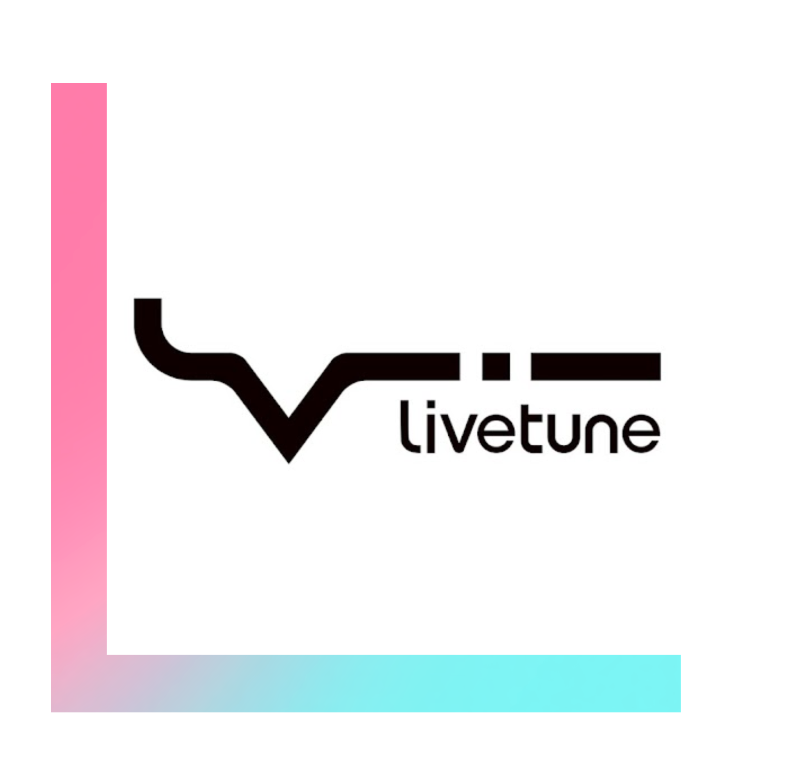

p主，也就是创造歌姬们歌曲的创作者和作曲编曲者们。这里介绍了一些我个人很喜欢的p主和我个人认为如果是葱葱信任很值得听的一些p主！只代表我个人偏好，由于时间以及篇幅原因只能写的下我很推荐的八位p主了！这里的内容不会过多关注p主们的日常生活，更多的还是曲风以及知名成就！对p主们感兴趣的还是要自己认识他们比较好！部分内容有参考粉丝评价，歌曲评论，以及萌娘百科等进行信息参考！
Producers, that is, the writers and arrangers who create the songs of vocaloids. Here are some of my personal favorites and some that I personally think are worth listening to! The content here will focus more on their music style and famous achievements! Part of the content has reference fan comments, song reviews, as well as encyclopedia information reference!
Producers, that is, the writers and arrangers who create the songs of vocaloids. Here are some of my personal favorites and some that I personally think are worth listening to! The content here will focus more on their music style and famous achievements! Part of the content has reference fan comments, song reviews, as well as encyclopedia information reference!
